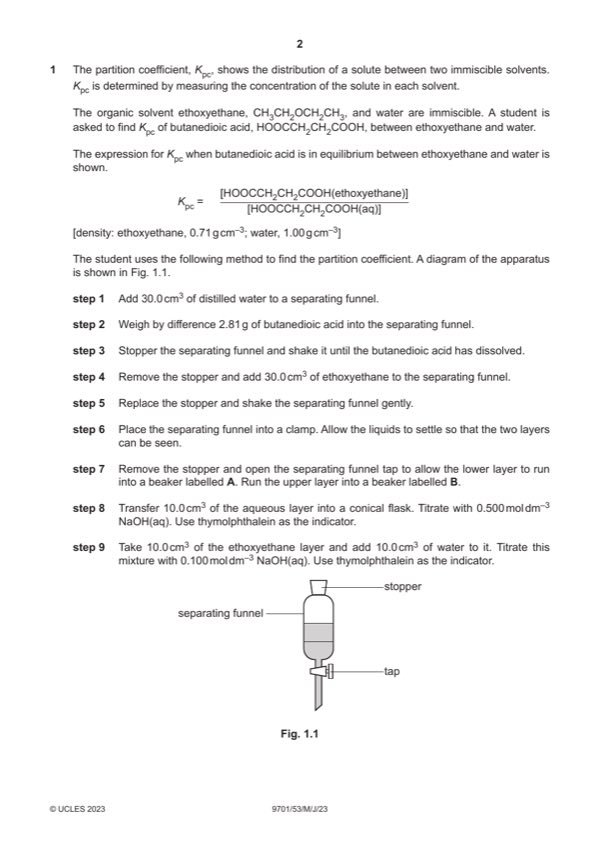

Question 1

Original paper page 2
Part 1(a)(i) — solution
aqueous AND water has greater density (than ethoxyethane so it forms the lower layer) 1
Mark points
- Include the ideas shown in the solution above.
Part 1(a)(ii) — solution
(10 cm3) (volumetric) pipette 1
Mark points
- Include the ideas shown in the solution above.
Part 1(a)(iii) — solution
the acid transfers / dissolves into the water (before titration / reaction with sodium hydroxide) 1
Mark points
- Include the ideas shown in the solution above.
Part 1(b)(i) — solution
Answer: 1000
- n (NaOH) in titre = 0.5 (= 0.0136250)
- n(HOOCCH2CH2COOH(aq)) = 0.0136250 / 2 = 0.0068125
- [HOOCCH2CH2COOH(aq)] = 0.5 2 = 0.6813 mol dm–3 (0.68125 mol dm–3)
Mark points
- n (NaOH) in titre = 0.5 (= 0.0136250)
- n(HOOCCH2CH2COOH(aq)) = 0.0136250 / 2 = 0.0068125
- [HOOCCH2CH2COOH(aq)] = 0.5 2 = 0.6813 mol dm–3 (0.68125 mol dm–3)
Part 1(b)(ii) — solution
- [M1] [HOOCCH2CH2COOH(ethoxyethane)] = 0.1125 mol dm–3 2
- [M2] Kpc = M1 / (b)(i)
Mark points
- [M1] [HOOCCH2CH2COOH(ethoxyethane)] = 0.1125 mol dm–3 2
- [M2] Kpc = M1 / (b)(i)
Part 1(b)(iii) — solution
it is not possible to pipette all (30 cm3) of the aqueous layer from the beaker (as some will always be left behind) 1
Mark points
- Include the ideas shown in the solution above.
Part 1(b)(iv) — solution
use a larger volume (>30cm3) of water (in step 1) 1
Mark points
- Include the ideas shown in the solution above.
Part 1(b)(v) — solution
Answer: AND
Kpc value would be smaller / decrease 1
AND
because (equilibrium had not been attained and) more butanedioic acid remains in aqueous layer
2023 Page 5 of 8
9701/53 Cambridge International AS & A Level – Mark Scheme May/June 2023
Mark points
- Correct result: AND